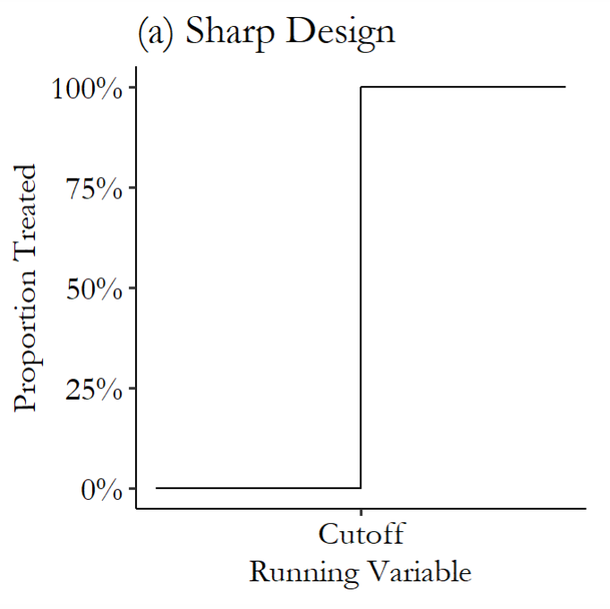
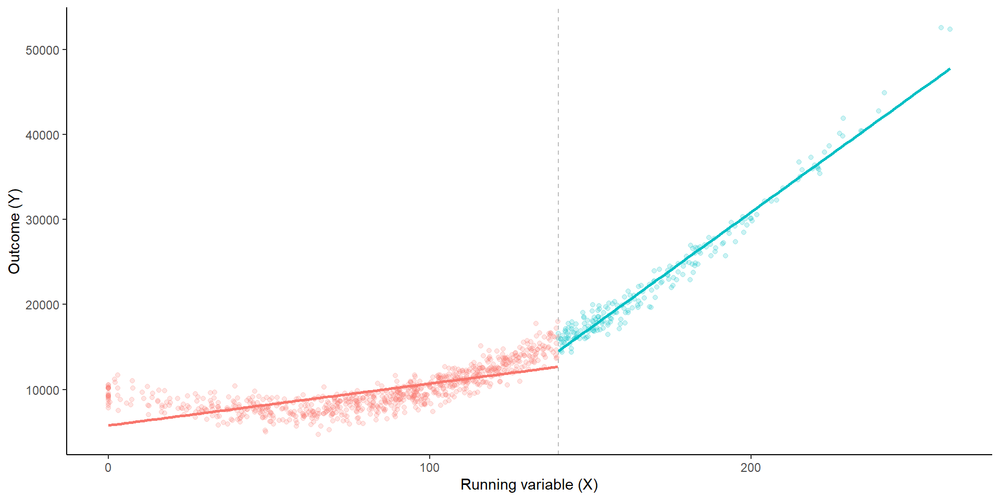
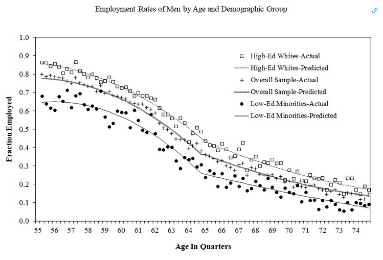
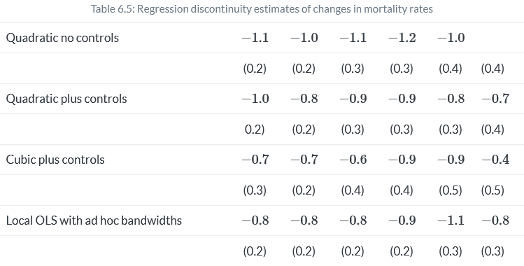
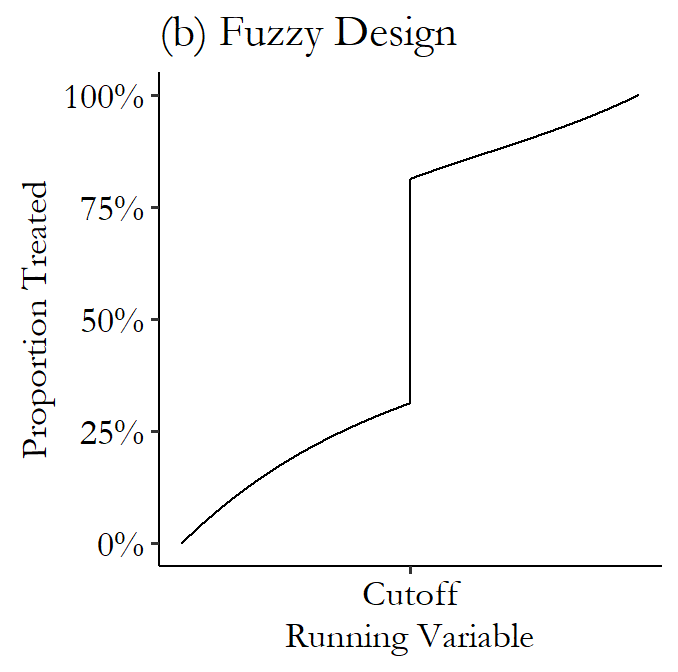
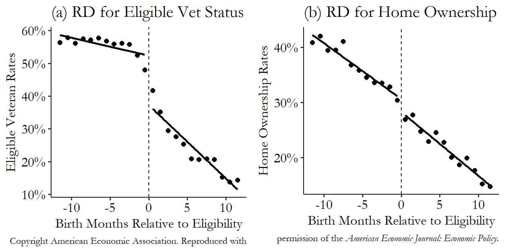

Causal Inference Methods for Policy Evaluation
4-Regression Discontinuity Design
Jacopo Mazza
Utrecht School of Economics
2024
Insure them all!
Health insurance and health outcomes
- One of the most important policy questions in the US is whether health insurance should be provided to all citizens.
- The Affordable Care Act (ACA) was a major policy reform that aimed to increase the number of Americans with health insurance.
- The policy was implemented in 2014, and it was expected to have a positive impact on health outcomes.
- It is hard though to know the causal effect of health insurance on health outcomes.
Why?
Happy Birthday! You are insured!
- The American health system is a mix of public and private insurance.
- There are 2 main public insurance programs:
- Medicaid: for low-income individuals and families.
- Medicare: for people over 65.
- The eligibility for Medicare is solely based on age.
- It is reasonable to assume that the health of people who are just above and below the age of 65 is similar.
- We could compare the health outcomes of these two groups to estimate the causal effect of access to insurance on health outcomes.
- This is the idea behind the Regression Discontinuity Design (RDD).
Regression Discontinuity Design
Regression Discontinuity Design
- Sometimes, the assignment to a treatment is based on a continuous variable:
- Pension eligibility based on age.
- School admission based on test scores.
- Loan approval based on credit score.
- Health insurance eligibility based on age.
- Borders between areas with different policies.
- The RDD is a quasi-experimental design that exploits the discontinuity in the probability of receiving the treatment at the cutoff.
The idea
- The intuition is that individuals just above and below the cutoff are similar in all aspects except for the treatment.
- We can compare the outcomes of those just above and below the cutoff to estimate the causal effect of the treatment.
The elements of the RDD
For an RDD design we need:
- A continuous running variable \(X\).
- A cutoff \(c\).
- A treatment \(D\).
- An outcome \(Y\).
- A bandwidth around the cutoff.
The RDD design
- Account for how the running variable normally affects the outcome,
- Focus on observations right around the cutoff, inside the bandwidth,
- Compare the just-barely-treated against the just-barely-didn’t to get the effect of treatment.
RDD graphically: raw data
RDD graphically: predict values
RDD graphically: pick a bandwidth
RDD graphically: estimate jump at cutoff
The Two Kinds of RDD
There are two kinds of RDD:
- Sharp RDD: the treatment is deterministic at the cutoff.
- Fuzzy RDD: the treatment is not deterministic at the cutoff.
The Sharp RDD
The Sharp RDD

- The treatment is deterministic at the cutoff.
- i.e. Madicare eligibility at 65.
- Formally, the treatment is a step function of the running variable: \(D_i =
\begin{cases}
1 & \text{if } X_i \geq c_0 \\
0 & \text{if } X_i < c_0
\end{cases}\)
- Where \(c_0\) is the cutoff.
- If you know the value of \(X\), you know the value of \(D\).
The Sharp RDD: Estimation
- The causal effect is estimated as the jump in the outcome at the cutoff.
- In potential outcomes notation: \[\begin{align*}
Y_i^0 &= \alpha + \beta X_i \\
Y_i^1 &= Y_i^0 + \delta
\end{align*}\]
- Where \(\delta\) is the causal effect.
- Using the switching equation: \[\begin{align*}
Y_i &= Y_i^0 + (Y_i^1 - Y_i^0) D_i \\
Y_i &= \alpha + \beta X_i + \delta D_i + \varepsilon_i
\end{align*}\]
- \(D_i\) is the treatment dummy.
- \(X\) is the running variable.
The Sharp RDD: Estimation
- Let’s return to the paper by Card and coauthors about medicare eligibility.
- Remember: they estimated the effect of medicare eligibility on health outcomes.
- This is a sharp RDD.
- They estimate the regression: \[Y_i = \alpha + \beta (X_i-c_0) + \delta D_i + \varepsilon_i\]
- Where \(Y_i\) is the health outcome.
- \(X_i\) is the running variable (age).
- \(D_i\) is the treatment dummy (eligibility for medicare).
- \(c_0\) is the cutoff.
- It is common to recenter the running variable around the cutoff.
- Recentering only affects the interpretation of the intercept, not the treatment effect.
RDD: the functional form
- So far we have assumed a linear relationship between the running variable and the outcome.
- What if the relationship is not linear?

How to Tackle Functional Form Issues
There are two ways:
Directly model non-linearity: parametric approach
Only use observations close to the threshold: non-parametric approach
Parametric RDD: Modeling Non-Linearity
In this case we can add non-linear terms to the regression equation:
By adding polynomials: \[Y_i = \alpha + \beta_1 X_i + \beta_2 X_i^2 + \delta D_i + \varepsilon_i\]
By adding interactions with the running variable: \[Y_i = \alpha + \beta_1 (X_i-c_0) + \beta_2 D_i + \beta_3 (X_i-c_0)\times D_i + \varepsilon_i\]
- In this case recenter the running variable
A combination of the two: \[Y_i = \alpha + \beta_1 (X_i-c_0) + \beta_2 (X_i-c_0)^2 + \beta_3 D_i\] \[+ \beta_4 (X_i-c_0)\times D_i + \beta_5 (X_i-c_0)^2\times D_i + \varepsilon_i\]
Non-Parametric RDD: Local Linear Regression
Least squares approaches can have poor predictive power when the relationship is non-linear.
Alternatively, we can use a local linear regression:
- Use only observations close to the cutoff.
- Estimate the relationship between the running variable and the outcome using a linear regression.
- Weight the observations by their distance from the cutoff.
- The chosen distance from the cutoff is the bandwidth.
Non-Parametric RDD: Estimation
The closest we are to the cutoff the less non-linearity matters.
We can estimate the treatment effect by fitting a linear regression to the observations close to the cutoff: \[Y_i = \alpha + \beta X_i + \delta D_i + \varepsilon_i\]
- in a sample such that \[X_0−b \leq X \leq X_0+b\]
The bandwidth \(b\) is a key parameter in the RDD.
How to choose the bandwidth?
- A small bandwidth reduces bias but increases variance.
- A large bandwidth reduces variance but increases bias.
The effect of Medicare on Health Insurance
| Group | On Medicare | Any Insurance | Private Coverage | 2 + Forms Coverage | Managed Care |
|---|---|---|---|---|---|
| Overall Sample | 59.7 (4.1) | 9.5 (0.6) | -2.9 (1.1) | 44.1 (2.8) | -28.4 (2.1) |
| White non-Hispanic | |||||
| High School Dropout | 58.5 (4.6) | 13.0 (2.7) | -6.2 (3.3) | 44.5 (4.0) | -25.0 (4.5) |
| High School Graduate | 64.7 (5.0) | 7.6 (0.7) | -1.9 (1.6) | 51.8 (3.8) | -30.3 (2.6) |
| Some College | 68.4 (4.7) | 4.4 (0.5) | -2.3 (1.8) | 55.1 (4.0) | -40.1 (2.6) |
| Minority | |||||
| High School Dropout | 44.5 (3.1) | 21.5 (2.1) | -1.2 (2.5) | 19.4 (1.9) | -8.3 (3.1) |
| High School Graduate | 44.6 (4.7) | 8.9 (2.8) | -5.8 (5.1) | 23.4 (4.8) | -15.4 (3.5) |
| Some College | 52.1 (4.9) | 5.8 (2.0) | -5.4 (4.3) | 38.4 (3.8) | -22.3 (7.2) |
| Classified by Ethnicity Only | |||||
| White non-Hispanic | 65.2 (4.6) | 7.3 (0.5) | -2.8 (1.4) | 51.9 (3.5) | -33.6 (2.3) |
| Black non-Hispanic | 48.5 (3.6) | 11.9 (2.0) | -4.2 (2.8) | 27.8 (3.7) | -13.5 (3.7) |
| Hispanic | 44.4 (3.7) | 17.3 (3.0) | -2.0 (1.7) | 21.7 (2.1) | -12.1 (3.7) |
The effect of Medicare on Health Insurance
The table shows the average treatment for 65-year-olds compliers
Eligibility increases Medicare take-up by 59.7 percentage points in the overall sample.
Eligibility reduces pirvate coverage by 2.9 percentage points in the overall sample.
Identification relies on continuity of the running variable around the cutoff: \[\lim_{{65 \leftarrow a}} E[y^1|a] - \lim_{{a \to 65}} E[y^0|a] = \delta\]
What else changes at 65?
Employment Rates around the Cutoff
Mediacare Coverage and Mortality
Mediacare Coverage and Mortality
In a follow up paper, Card and coauthors show that Medicare eligibility reduces mortality by around 1 percentage points.
The results are robust to different bandwidths and functional forms.
External Validity
RDD estimates the effect of the treatment for individuals close to the cutoff.
In other words RDD gives you the LATE
Extrapolating results for individuals far from the threshold requires strong assumptions
RDD typically estimates only local effects!
RDD: Assumptions
- The functional form to estimate the relationship between the running variable and the outcome variable is adequate
- There is no other discontinuity around the threshold1
- nothing else changes at this threshold
- The units can manipulate neither the threshold nor the running variable2
- the individuals have no controls over their treatment status
- The discontinuity affects only units on one side of the threshold3
- only the treatment group is affected, not the control group
#The Fuzzy RDD{.r-fit-text background-color=#107895}
The Fuzzy RDD

We call a discontinuity fuzzy when the probability of treatment suddendly increases at the cutoff.
Formally:
\[ \lim_{{X \to c_0}} P(D_i = 1|X_i=c_0) \neq \lim_{{c_0 \leftarrow X_i}} P(D_i = 0|X_i=c_0)\]
The identifying assumptions remain the same as for the sharp RDD.
With fuzzy RDD we can use the threshold as an instrument for the treatment.
The Fuzzy RDD: Estimation
As for an IV, we can estimate the treatment effect using the following two-stage least squares (2SLS) regression:
- First stage: \[D_i = \alpha + \beta X_i + \pi Z_i + \varepsilon_i\]
- Estimate the probability of treatment as a function of the running variable and \(Z_i\) which is a dummy for being above the cutoff.
- Second stage:
\[Y_i = \alpha + \beta X_i + \delta \hat{D}_i + \varepsilon_i\]
- Estimate the outcome as a function of the running variable and the predicted treatment.
The Fuzzy RDD: Example
We take a paper by Fetter, 20131 as an example.
Fetter estimates the effect of the GI Bill on home ownership.
The GI Bill was a policy that provided mortgage subsidies to veterans of World War II.
Discontinuity is in birth year: veterans of big wars (WWII and Korean War) are eligible for the GI Bill, if you are born too late you could have not joined for these wars.
But not everyone joins the military!
The Fuzzy RDD: Example in R
library(tidyverse); library(fixest); library(modelsummary)
vet <- causaldata::mortgages
# Create an "above-cutoff" variable as the instrument
vet <- vet %>% mutate(above = qob_minus_kw > 0)
# Impose a bandwidth of 12 quarters on either side
vet <- vet %>% filter(abs(qob_minus_kw) < 12)
m <- feols(home_ownership ~
nonwhite | # Control for race
bpl + qob | # fixed effect controls
qob_minus_kw*vet_wwko ~ # Instrument our standard RDD
qob_minus_kw*above, # with being above the cutoff
se = 'hetero', # heteroskedasticity-robust SEs
data = vet)
# And look at the results
msummary(m, stars = c('*' = .1, '**' = .05, '***' = .01))The Fuzzy RDD: Example in R
| (1) | |
|---|---|
| fit_qob_minus_kw | −0.007*** |
| (0.002) | |
| fit_vet_wwko | 0.170*** |
| (0.046) | |
| fit_qob_minus_kw × vet_wwko | −0.003 |
| (0.003) | |
| nonwhite | −0.190*** |
| (0.007) | |
| Num.Obs. | 56901 |
| R2 | 0.053 |
| R2 Adj. | 0.052 |
| R2 Within | 0.037 |
| R2 Within Adj. | 0.037 |
| AIC | 68659.5 |
| BIC | 69187.5 |
| RMSE | 0.44 |
| Std.Errors | Heteroskedasticity-robust |
| FE: bpl | X |
| FE: qob | X |
| * p < 0.1, ** p < 0.05, *** p < 0.01 |
The Fuzzy RDD: Example in R
- Veteran status increases homeownership rates by 17 percentage points
